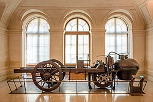
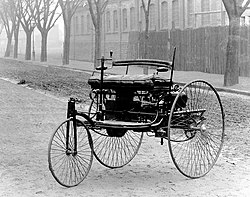
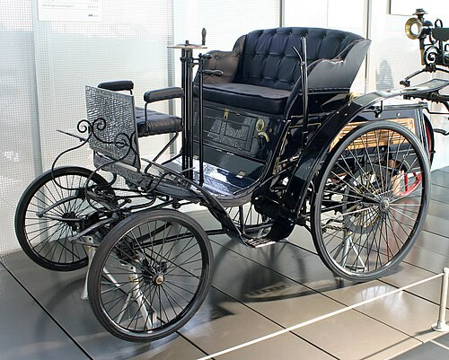

ავტომობილი — ძრავიანი თვითმავალი ეტლი, რომელსაც აქვს ორზე მეტი თვალი (თვლებთან ერთად შეიძლება ჰქონდეს მუხლუხები ან თხილამურები), გადაჰყავს მგზავრები და გადააქვს ტვირთი.პირველი თვითმავალი ეტლის იდეა ეკუთვნის ლეონარდო და ვინჩის. 1515 წელს მან მთავრობას წარუდგინა სამხედრო მიზნებისათვის განკუთვნილი თვითმავლის პროექტი, რომლის მიხედვითაც თვლები უნდა აემოძრავებინა წინასწარშეკუმშულ ზამბარას. 1689 წელს ი. ნიუტონმა დაამუშავა ორთქლის 1337 ქვაბიდან წნევით გამომავალი ორთქლის ჭავლის რეაქტიული პრინციპით მოქმედი თვითმავალი ეტლის პროექტი. ეს პროექტები თავის დროზე არ განხორციელებულა (მათში წამოყენებული პრინციპები გამოყენებულია ჩვენი დროის ბევრ სატრანსპორტო მანქანაში)
ფრანგმა ნიკოლას ჟოზეფ კიუნომ შექმნა პირველი, სრულმასშტაბიანი ავტომობილი, დაახლოებით 1769 წელს. ეს იყო ორთქლის ძრავზე მომუშავე ტრიციკლი[2]. მან ასევე შექმნა 2 ტრაქტორი საფრანგეთის არმიისთვის. ამ მანქანების მთავარი პრობლემა იყო წყლის მიწოდების სისტემა რომელიც მას პრაქტიკულად გამოუსადეგარს ხდიდა გადასაადგილებლად.ნიკოლას ჟოზეფ კიუნოს მიერ შექმნილი ავტომობილი, 1770 წ. Musée des arts et métiers, პარიზი1807 წელს ნისეფორ ნეფსიმ და მისმა ძმამ კლოდმა შექმნეს ის, რასაც შეიძლება ეწოდოს მსოფლიოში პირველი შიდა წვის ძრავა (რომელსაც მათ პიროლოფორი უწოდეს), მაგრამ მათ მისი დაყენება ნავზე გადაწყვიტეს, მდინარე სონაზე, საფრანგეთში[3]. ამავე წელს, 1807 წელს შვეიცარიელმა გამომგონებელმა ფრანსუა ისააკ დე რივაზმა შეიმუშავა საკუთარი „დე რივაზის შიდა წვის ძრავა“ და გამოიყენა იგი მსოფლიოში პირველი ავტომობილის შესაქმნელად, რომელიც იკვებებოდა ასეთი ძრავით.
1886 წელი ითვლება მანქანის დაბადების წლად, როდესაც გერმანელმა კარლ ბენცმა დააპატენტა თავისი Benz Patent-Motorwagen; ის ზოგადად აღიარებულია, როგორც მანქანის გამომგონებელი.1879 წელს ბენცმა მიიღო პატენტი მისი პირველი შიგა წვის ძრავისთვის, რომლის დიზანიც 1878 წელს შექმნა. ხოლო პირველი ავტომობილი, რომელიც ამ ძრავით იყო აღჭურვილი, დაასრულა 1885 წელს მანჰაიმში, გერმანია. ბენცმა განაგრძო საკუთარი ქმნილების დახვეწა და დაიწყო მისი მასობრივი წარმოება. 1888-1893 წლებში მან 25 ავტომობილი გაყიდა. ამავე პერიოდში, ემილი როჟემ საფრანგეთში დაიწყო ბენცის დიზაინით ძრავების წარმოება. საფრანგეთში ავტოწარმოებამ უფრომ მოიკიდა ფეხი და თავდაპირველად როჟე უფრო მეტ მანქანას ყიდდა, ვიდრე თავად ბენცი გერმანიაში. 1896 წელს ბენცმა დააპატენტა ახალი ტიპის, ე.წ. „ჰორიზონტალური“ შიგა წვის ძრავი, რომელსაც „ბოქსერმოტორ“ უწოდა. მეცხრამეტე საუკუნის მიწურულისთვის კარლ ბენცს ჰქონდა უდიდესი ავტომწარმოებელი კომპონია. მარტო 1899 წელს ბენცის კომპანიამ 572 მანქანა გამოუშვა.
